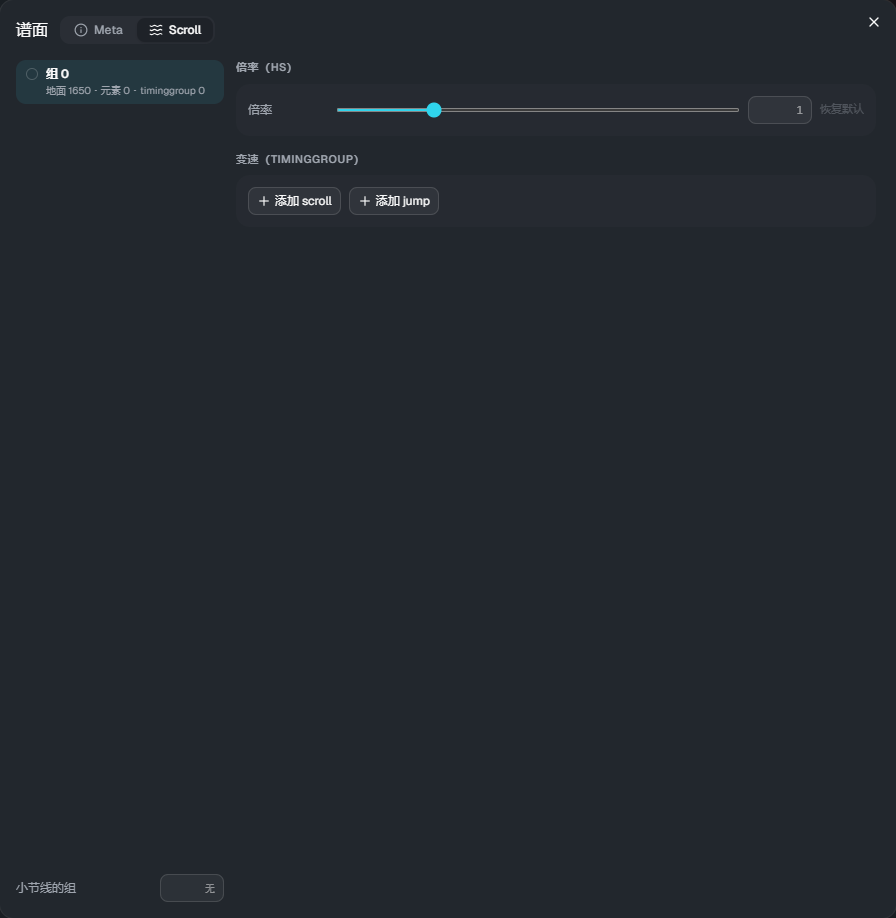

流速（Scroll）
如果什么都不设置，地面音符会按照谱面的 scroll（谱面编辑器中 effect 的 scroll / jump）流动。 「流速」既可以修改谱面的 scroll / jump，也可以按音符组改变流动方式。判定的时间不会改变（只改变看到的位置）。
音符组可以用谱面编辑器的音符组功能，或 ES3 Studio 属性中的 组 设置。没有设置组的地面音符属于组 0（默认）。
打开方式
点击时间轴工具栏上的 「Scroll」（会打开与 Meta 同一个对话框的 Scroll 标签）。

- 左侧：最上方是 谱面（.mc），下面是组的列表。组会显示地面音符・元素・timinggroup 的数量。时间轴上的音符・空中元素・描线会用组的颜色描边
- 添加组：把一个还没用过的编号加入列表（设置 hs・变速，或给音符设置这个组后就会保留）
- 右侧：选中项的设置。组的标题会显示它是按谱面的 scroll 还是按 timinggroup 流动
- 小节线的组：让小节线使用哪个组的流速（默认为组 0）
手机竖屏时，列表排在上方，表格以只含 时间・类型・值・Duration 的紧凑形式显示（ease・删除点行右侧的 ▾ 展开）。
谱面的 scroll / jump
谱面（.mc）effect 中的 scroll 和 jump。表格的用法与下面的变速相同（没有 Duration・ease）。 保存时写回 .mc。hs・sign 等这里不能修改的行会保持原样。
没有 timinggroup 的组按谱面的 scroll 流动；对有 timinggroup 的组不生效。
倍率（hs）
为该组的流动速度乘上整首歌固定的倍率。范围 0.1〜10，默认为 1（越大越快）。点右侧的 ↺ 恢复为 1。
变速（timinggroup）
只属于该组的速度变化。
- 用表格标题栏的 ＋scroll / ＋jump 在播放线的位置添加一行。新添加的行总是在表格最下方（修改时间后行也不会移动；重新打开时才按拍的顺序排列）
- 类型以彩色标签显示（scroll 为浅蓝，jump 为红）。值的旁边会显示单位（scroll 是 ×，jump 是 ms）
- 只有表格内部会滚动，列标题保持不动。播放线所在时间生效的那一行左侧会显示色条
- 点进某一行的输入框时，播放线会移到该时间（停止播放时）
- scroll：从该时间起把速度改为「值」。填写 Duration 后，会在这段长度（拍）内按缓动（ease）平滑地改变；为
0:0/1（0）时立即改变。Duration 可以输入1:0/1（拍）或1000（ms） - jump：在该时间向前跳过「值」（ms）
- 时间和 Duration 与谱面（.mc）的 beat 相同，以与 Malody 谱面编辑器相同的 拍:分子/分母 显示（例：
16:1/2= 16 又 1/2 拍。拍从歌曲开头算起）。 可以直接输入谱面编辑器中的值（从 .mc 复制的[16, 1, 2]、全角的16：1／2、16 1/2也可以）。纯数字（66269）按 ms 读取
只要添加了一行变速，该组就不再受谱面的 scroll / jump 影响，只按这里写的速度流动。 与倍率（hs）一起使用时，变速的速度还会再乘上倍率。
设置组的方法
在属性的 组 中从列表选择。选 新建组 会放入一个还没用过编号的组。 选中多个时可以一次设置（撤销一次即可恢复）。
未设置组的地面音符，以及未选择组的空中元素（AirTap・AirSlide・AirLift）、描线（Trace・Guide）和小节线，都属于组 0（默认）。 组 0 的 hs・变速对它们全部生效。